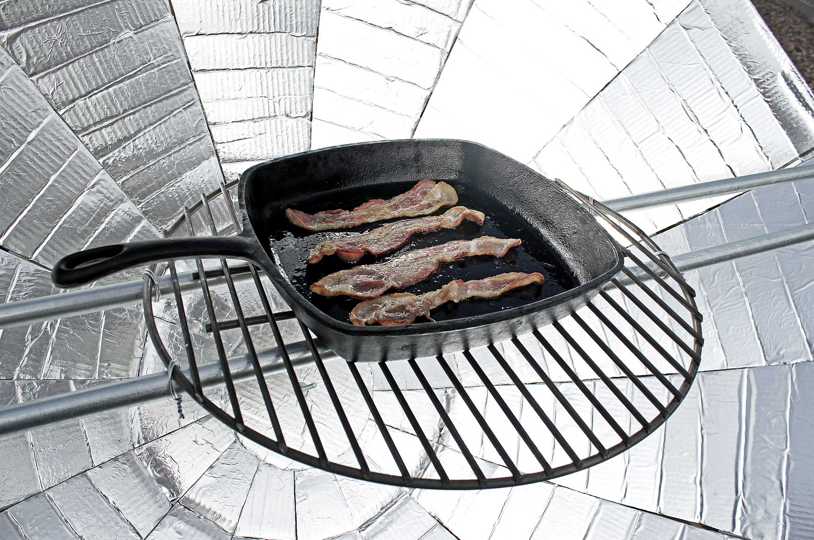
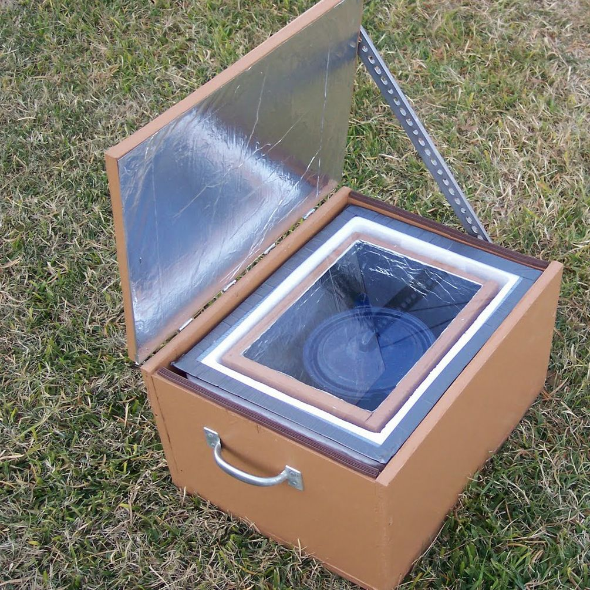
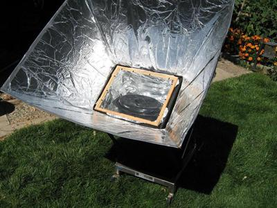
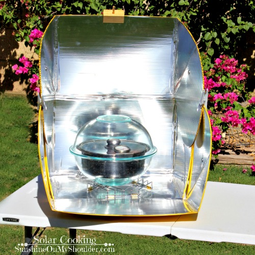

The Esolar cookers project provids affordable and eco-friendly cooking solutions using solar energy to reduce fuel costs,protectthe environment,andimprove the lives of low-income families.ovensuse sunlight as a free and clean energy source.The plan includes trianing and after sales support.
MISSION
To provide affordable,clean and eco-friendly solar cookers\ovensthat promote clean use,reduce charcoal dependence,and improve the lives of low-income families.
Solar cookers
- parabolic cookers 
- box cookers 
- panel cookers 
parabolic
Benefits
- cuts on monthly expenses in Households
- lowering chances of getting respiratory illness caused by smoke
- forest reservation
- imsimple parabolic and box stove designs
- locally sourced materials where possible
- it has no time limit (long life span)
- repairable and easy to maintain
- training and support programs
BOX COOKERS
- Description: It is an insulated box with a clear glass/plastic lid
- How they work:Reflects direct sunshine into the box.
The glass lid lets the sunlight in but traps the heat making cooking easy - Best for: slow cooking,baking and cooking stew
PARABOLIC COOKERS
- Description:These are curved dish like reflector.
- How they work: the parabolic shape focuses
sunlight to a single point,where the cooking pot is placed.
- Best for:High temperature cooking like frying and baking.
PANEL COOKERS.
- Description: These are smaller lighter designs with flat,reflective panels.
- How they work:They are angled to direct sunlight into a small oven containing a pot.
- Best for:Travel and portability,as they are more compact.
NECESSARY MATERIALS
- An insulated outer box (cardboard/wood)
- Transparent cover
- Reflector (aluminum foil/glass)
- Black pot
DIY
Benefits
- cuts on monthly expenses in Households
- lowering chances of getting respiratory illness caused by smoke
- forest reservation
- imsimple parabolic and box stove designs
- locally sourced materials where possible
- it has no time limit (long life span)
- repairable and easy to maintain
- training and support programs
For more details and support please contact us:
TEL:0782 420 273
@ Esolar.gmail.com
- Description: These are smaller lighter designs with flat,reflective panels.
- How they work:They are angled to direct sunlight into a small oven containing a pot.
- Best for:Travel and portability,as they are more compact.
NECESSARY MATERIALS
- An insulated outer box (cardboard/wood)
- Transparent cover
- Reflector (aluminum foil/glass)
- Black pot
Benefits
- cuts on monthly expenses in Households
- lowering chances of getting respiratory illness caused by smoke
- forest reservation
- imsimple parabolic and box stove designs
- locally sourced materials where possible
- it has no time limit (long life span)
- repairable and easy to maintain
- training and support programs
For more details and support please contact us:
TEL:0782 420 273
@ Esolar.gmail.com